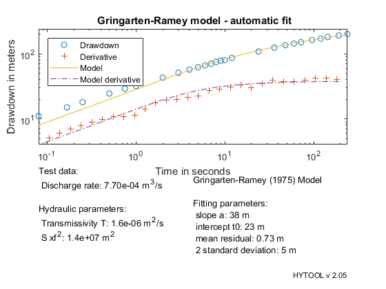

Single fracture in a confined aquifer.
This demonstrates the interpretation of a pumping test in a confined aquifer with infinite conductivity fracture with the Gringarten and Ramey (1974) solution
MIT License Copyright (c) 2017 Philippe Renard - University of Neuchâtel (CHYN)
The data set for this example comes from the following reference: Gringarten A. C., Ramey H. J., & Raghavan R., 1975. Applied Pressure Analysis for Fractured Wells, Petroleum Transactions, AIME follows page 784. The test data are published on page 887-889.
Let us first load the data.
[t,s]=ldf('grg_ds1.dat');
| HYTOOL Demo |
We then define the values of the parameters that are required for the interpretation:
Flow rate : 419 STB/D Porosity : 0.12
Q=7.7e-4; % Pumping rate in m3/s S=1; % Storage coefficient
Once the data have been loaded and the parameter defined, we can interpret the data. We do that as usually in two steps. First the parameters p of the model are estimated with the function grg_gss. Then we find an optimum fit.
p=grg_gss(t,s);
p=fit('grg',p,t,s);
Norm of Norm of
Iteration SSE Gradient Step
-----------------------------------------------------------
0 2.88129e+06
1 94416.6 284322 44.8803
2 16914.9 23888.8 3.24252
3 3998.52 4325.46 6.81945
4 583.02 819.533 7.40526
5 178.981 93.6042 4.11681
6 169.028 2.9732 0.914642
7 168.996 0.0183996 0.084595
8 168.996 6.56163e-05 0.00569644
9 168.996 5.74303e-08 0.000364953
Iterations terminated: relative change in SSE less than OPTIONS.TolFun
We can then display the result of the interpretation. Hytool find that the folowing values for the transmissivity :
T = 2.1 e-3 m2/s
figure (1);
grg_rpt(p,t,s,[Q,S],' Gringarten-Ramey model - automatic fit')
 The results are in reasonable agreement with the values found by Gringarten & Al. (1975): Effective permeability (k): 7.11 e-15 m2 Viscosity (v): 0.65 e-3 Pa.s System compressibility (c): 3 e-9 Pa Formation volume factor (B): 1.26 RB/STB Thickness (e): 25 m Porosity : 0.12 Wellbore radius (rw): 8.25 e-2 m Transmissivity [T = ((k*p*g)/v)*e]= 3 e-6 m2/s